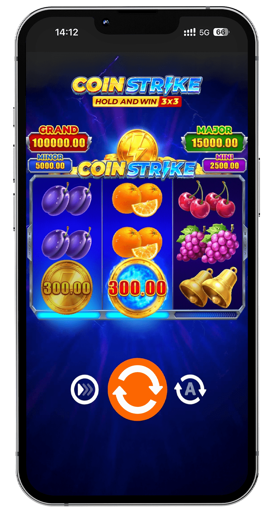

Looking to play the coin strike slot? Australia’s leading online casinos offer this exciting game with generous bonuses to boost your spins. The coin strike hold and win slot is a favorite among players for its vibrant gameplay and massive win potential. Here’s a curated list of top platforms for 2025, each providing a secure environment to enjoy the coin strike slot:
Coin Strike Slot: Spin for Massive Wins!
Ready to spin the reels of a dynamic online slot? The coin strike slot, developed by Playson, is a standout game available at top Australian casinos like RocketPlay, WinSpirit, King Billy, and National Casino. This vibrant coin strike hold and win slot combines classic slot aesthetics with the innovative Hold and Win feature, offering a chance to win up to 5,150x your stake.
Top Casinos to Play Coin Strike Slot in Australia 2025

- RocketPlay: Welcome Bonus 100% up to AU$1,500 + 100 Free Spins
Spin the Coin Strike slot at RocketPlay with a AU$1,500 bonus!
RocketPlay Review - WinSpirit: First Deposit Bonus 100% up to AU$600 + 50 Free Spins
Play Coin Strike slot at WinSpirit with a AU$600 bonus!
WinSpirit Review - King Billy: Welcome Package 100% up to AU$2,500 + 250 Free Spins
Try Coin Strike slot with a AU$2,500 bonus at King Billy!
King Billy Review - National Casino: Welcome Bonus 100% up to AU$500 + 100 Free Spins
Spin Coin Strike slot at National Casino with a AU$500 bonus!
National Casino Review
These platforms provide a secure and engaging environment to play the coin strike hold and win slot, ensuring a top-notch gaming experience for Australian players. Whether you’re aiming for the 5,150x max win or just want to test the game, these casinos offer the perfect setting to get started.
What is Coin Strike Slot?
The coin strike slot, also known as Coin Strike: Hold and Win, is a high-energy online slot developed by Playson, a renowned provider in the gaming industry. Featuring a compact 3x3 reel grid with 5 fixed paylines, this game blends retro fruit symbols with modern bonus features like the Hold and Win mechanic, making it a standout choice for Australian players. With a 95.66% RTP, medium-high volatility, and a maximum win of 5,150x your stake, the coin strike hold and win slot is a favorite at casinos like RocketPlay, WinSpirit, King Billy, and National Casino. Its mobile-friendly design, vibrant visuals, and exciting gameplay make it ideal for players seeking big wins and engaging sessions.

The coin strike slot appeals to a wide audience due to its intuitive controls and balanced mix of frequent smaller payouts and the potential for massive jackpots. The Hold and Win feature, combined with Playson’s innovative design, creates a dynamic experience that keeps players returning for more. Whether you’re a casual player or a high roller, the coin strike hold and win slot offers something for everyone, with betting ranges and features tailored to various play styles.
Game Visuals
The coin strike slot boasts a retro-modern design that captures the essence of classic slots while incorporating contemporary flair. The 3x3 reel grid is adorned with familiar symbols like cherries, bells, sevens, and golden coins, set against a sleek, vibrant backdrop. The Hold and Win feature in the coin strike hold and win slot comes to life with dynamic animations, showcasing locked coins and lightning bolts that enhance payouts. The user-friendly interface ensures easy navigation, with clear buttons for bet adjustments, spin activation, and bonus feature access, making the coin strike slot accessible to all players. The vibrant colors and smooth graphics elevate the gaming experience, creating an engaging atmosphere for chasing big wins.
Gameplay Mechanics
The coin strike slot operates on a straightforward 3x3 grid with 5 fixed paylines, offering bets from AU$0.20 to AU$100 per spin to suit various budgets. The core gameplay revolves around landing matching symbols across paylines, but the Hold and Win feature is the heart of the coin strike hold and win slot. Key mechanics include:
- Hold and Win Feature: Triggered by landing three or more coin symbols, this bonus round locks the coins in place and awards three respins. Each new coin resets the respin counter to three, with coins revealing random cash values or one of three jackpots: Mini (25x), Major (100x), or Mega (1,000x).
- Strike Feature: A lightning bolt symbol can randomly appear during the Hold and Win round, boosting the value of coins on the reels to increase payouts.
- Max Win Potential: Filling all nine reel positions with coins unlocks the maximum win of 5,150x your bet in the coin strike hold and win slot.
- Additional Features: Autoplay allows automated spins with customizable limits, while Turbo mode speeds up gameplay for faster sessions.
The coin strike slot’s medium-high volatility ensures a mix of regular wins and the potential for significant payouts, particularly during the Hold and Win round. The 95.66% RTP provides a fair balance of risk and reward, making every spin exciting and rewarding.
Fairness and Security
The coin strike slot guarantees fair play through a certified Random Number Generator (RNG), ensuring random and unbiased outcomes for every spin. Playson, a trusted developer licensed by authorities like the Malta Gaming Authority, ensures the coin strike hold and win slot meets stringent regulatory standards. Top casinos like RocketPlay, WinSpirit, King Billy, and National Casino employ advanced SSL encryption and firewall protection to safeguard player data, providing a secure environment for enjoying the coin strike slot. The transparent 95.66% RTP further reinforces the game’s fairness, giving players confidence in their gaming sessions.
Best Casinos for Coin Strike Slot
Choosing a reliable casino is crucial for a safe and rewarding coin strike slot experience. Below is a table summarizing key features of top Australian casinos offering the coin strike hold and win slot:

|
Casino |
Year Founded |
License |
Banking Methods |
Welcome Bonus |
|
RocketPlay |
2020 |
Curacao |
Neosurf, Crypto, Visa, Mastercard, Skrill |
100% up to AU$1,500 + 100 FS |
|
WinSpirit |
2022 |
Curacao |
Crypto, Neosurf, Bank Transfer, UPI |
100% up to AU$600 + 50 FS |
|
King Billy |
2017 |
Curacao |
Visa, Mastercard, Crypto, Neosurf |
100% up to AU$2,500 + 250 FS |
|
National Casino |
2021 |
Curacao |
Neosurf, Crypto, Visa, Skrill |
100% up to AU$500 + 100 FS |
RocketPlay
RocketPlay is a premier Curacao-licensed casino with over 3,000 games, including the coin strike slot. Its welcome bonus of 100% up to AU$1,500 + 100 free spins enhances your coin strike hold and win slot gameplay. With mobile optimization, fast withdrawals, and support for Neosurf and crypto, RocketPlay is a top choice for Australian players. The platform’s sleek design and 24/7 support ensure a seamless experience.
WinSpirit
WinSpirit, a newer Curacao-licensed casino, offers the coin strike slot with a 100% welcome bonus up to AU$600 + 50 free spins. Its modern interface, crypto-friendly payments, and diverse game library make it ideal for playing the coin strike hold and win slot. Fast deposits and withdrawals, combined with regular promotions, provide a rewarding gaming environment.
King Billy
King Billy, established in 2017, is a Curacao-licensed platform with over 5,000 games, including the coin strike slot. Its generous welcome package of 100% up to AU$2,500 + 250 free spins boosts your coin strike hold and win slot sessions. With support for Visa, crypto, and Neosurf, King Billy ensures secure transactions. Its medieval-themed interface and tournaments add fun to the gaming experience.
National Casino
National Casino, licensed by Curacao, features the coin strike slot with a 100% welcome bonus up to AU$500 + 100 free spins. Its user-friendly design, extensive slot library, and support for Neosurf and crypto make it a great choice for coin strike hold and win slot players. Regular promotions and a VIP program enhance the overall experience.
Choosing a Coin Strike Slot Casino
Selecting the right casino for the coin strike slot requires careful consideration. Key factors include:
- Licensing: Verify a valid Curacao license in the website’s footer or Terms and Conditions.
- Bonuses: Look for coin strike hold and win slot-specific promotions with clear wagering requirements.
- User Interface: Choose platforms with intuitive navigation and mobile compatibility for seamless coin strike slot play.
- Security: Ensure SSL encryption and secure payment methods protect your data.
- Reputation: Check player reviews on trusted platforms like AskGamblers or Trustpilot.
- Customer Support: Test 24/7 support via live chat or email for responsiveness.
Tips for New Players
New to the coin strike slot? Start with these tips:
- Begin with small bets (AU$0.20–AU$1) to understand the game’s mechanics.
- Practice in demo mode to master the Hold and Win feature.
- Set a budget and stick to it to manage your gameplay responsibly.
- Use Autoplay with loss limits to control your sessions.
Transitioning to Real Money
Once comfortable with the coin strike slot, transition to real-money play:
- Register at RocketPlay, WinSpirit, King Billy, or National Casino.
- Deposit funds using Neosurf, crypto, or Visa to claim the welcome bonus.
- Launch the coin strike hold and win slot and start spinning for real payouts.
Coin Strike Slot Variations Across Casinos
While Playson offers a single version of the coin strike slot, slight variations exist across casinos, impacting the player experience:
Betting Limits
Betting ranges for the coin strike slot differ by platform. RocketPlay allows bets up to AU$100 per spin, ideal for high rollers, while WinSpirit may cap bets at AU$50 to suit conservative players. Always check the casino’s betting limits to align with your budget when playing the coin strike hold and win slot.
Interface Differences
The coin strike hold and win slot interface varies slightly across platforms. King Billy offers a minimalist design with clear controls, while National Casino includes enhanced stats displays for detailed gameplay insights. These differences don’t affect core mechanics but can influence usability and immersion in the coin strike slot.
Coin Strike Slot Strategies
While the coin strike slot relies on RNG, strategic approaches can optimize your gameplay and manage risk. Here are two strategies tailored for the coin strike hold and win slot:
Low-Risk Approach
This strategy focuses on conservative betting to extend playtime and minimize losses. Set small bets (AU$0.20–AU$1) in the coin strike slot to focus on base game wins. Use Autoplay with a loss limit (e.g., AU$10) to maintain control. This approach is ideal for beginners or players with limited budgets, ensuring longer sessions while exploring the coin strike hold and win slot.
Bonus Hunt Tactic
The Bonus Hunt tactic targets the Hold and Win feature in the coin strike hold and win slot. Place medium-sized bets (AU$1–AU$5) to increase your chances of triggering the bonus round. Leverage casino bonuses from RocketPlay or WinSpirit to extend your spins, boosting your odds of landing coin symbols and unlocking Mini, Major, or Mega jackpots. Focus on timing your spins to maximize entries into the Hold and Win round, where the biggest payouts await.
These strategies don’t guarantee wins due to the coin strike slot’s random nature, but they help manage your bankroll and enhance your gaming experience. Always play within your limits and prioritize responsible gaming.
Coin Strike Slot App
The coin strike slot is accessible via mobile apps from top casinos like RocketPlay, WinSpirit, King Billy, and National Casino, allowing you to play the coin strike hold and win slot on the go. Key app features include:
- Device Compatibility: Runs smoothly on Android, iOS, and tablets, ensuring consistent coin strike slot performance.
- Live Stats: Tracks bets, wins, and bonus triggers in real time for the coin strike hold and win slot.
- Game Features: Includes Autoplay, Turbo mode, and full access to the Hold and Win feature.
- Promotions: Offers coin strike slot-specific bonuses, such as free spins or deposit matches, to boost gameplay.
To download, visit the casino’s official website or App Store, ensuring the app is from a verified source with SSL encryption. For PC users, use an Android emulator like BlueStacks to access the coin strike slot app.
Legality of Coin Strike Slot in Australia
Playing the coin strike slot is legal in Australia when accessed through licensed offshore casinos like RocketPlay, WinSpirit, King Billy, and National Casino. These platforms operate under Curacao licenses, complying with international gaming regulations and Australian laws. Players must be 18+ to participate in coin strike hold and win slot gameplay, ensuring a safe and legal experience.
FAQ
Yes, the coin strike slot is legal at Curacao-licensed casinos like RocketPlay, WinSpirit, King Billy, and National Casino, which comply with Australian regulations.
Yes, the coin strike hold and win slot is available in demo mode at RocketPlay and King Billy, allowing free play with virtual credits.
The coin strike slot has a 95.66% RTP, providing a fair balance of risk and reward for players.
Trigger the Hold and Win feature in the coin strike hold and win slot by landing three or more coin symbols to chase jackpots or the 5,150x max win.
Play the coin strike slot at trusted casinos like RocketPlay, WinSpirit, King Billy, or National Casino for a secure and rewarding experience.